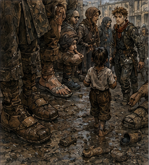
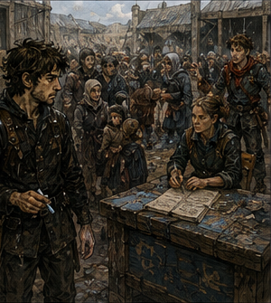

North Gate had too many shoes.

That was my first useful observation.
Not monsters.
Not blood.
Shoes.
People stood in three lines outside the gatehouse, and almost every pair was wrong for the city. Mud-caked work boots. Wooden clogs. Soft house shoes wrapped in rags. One child had no shoes at all and was being carried by a woman who had tied two coats around him.
The second useful observation was that nobody had organized the lines for the same reason.
One line was names.
One was injuries.
One was apparently food until someone changed it to lodging.
The third had become whatever happened when frightened people saw a line and assumed standing in it would eventually improve their situation.
Alden looked at the crowd.
“Where do we go?”
“Board said gate support.”
“That is not a place.”
A city watchman heard him.
“Blue table.”
“What blue table?”
The watchman pointed.
A table beneath the gate arch had once been painted blue.
Mostly.
We went there.
A woman in a watch coat stood behind it with three ledgers, two cups, a broken pencil, and the expression of someone who had been awake since before the problem existed.
“Guild?”
Alden showed his Bronze pin.
She pointed at me.
“Him too?”
“I’m visibly here.”
“That wasn’t the question.”
I showed mine.
“Names?”
“Alden Marr.”
“Greg.”
She wrote.
“Party?”
“No.”
“No,” Alden said.
She looked up.
“You together?”
Alden looked at me.
I looked at him.
“Temporarily,” I said.
“That’s together enough.”
She drew a line around our names.
“Captain Ressa. You take intake overflow.”

“What does that mean?” Alden asked.
“It means those people.”
She pointed at the third line.
The line that meant nothing.
“What do we do with them?”
“Find out what they need and send them somewhere useful.”
“Where is useful?”
Ressa slid a paper toward us.
It listed:
INJURED -> RED DOOR
CHILD SEPARATED -> GATEHOUSE
LODGING -> TEMPLE SQUARE
FOOD/WATER -> WEST YARD
DARR0WMERE WATCH/GUILD -> BLUE TABLE
FIRSTHAND THREAT REPORT -> BLUE TABLE
SECONDHAND THREAT REPORT -> DO NOT SEND TO BLUE TABLE
The last line had been underlined twice.
I smiled.
Ressa saw.
“What?”
“That is excellent.”
“It became necessary.”
“How necessary?”
She pointed toward a man shouting that his cousin had seen twenty wolves standing upright.
“Very.”
Alden read the paper.
“How do we know firsthand?”
“Ask if they saw it.”
“That’s it?”
“That’s the beginning.”
“What if they lie?”
“Then they lie in a shorter line.”
I liked Ressa.
This was becoming a problem.
She handed Alden a strip of blue cloth and me a piece of chalk.
“Keep the path clear. Nobody sleeps under the arch. Nobody blocks carts. If someone needs a healer, red door. If somebody starts a fight, shout.”
“Do we stop it?” Alden asked.
Ressa looked at him.
“Can you?”
“Yes.”
“Then stop it if shouting fails.”
Alden nodded.
I said, “What are we trying to learn?”
Ressa pointed at the line.
“You’re trying to move people.”
“About Darrowmere.”
“You’re trying to move people.”
“But if we ask the same questions while moving them, we can improve the reports.”
She looked at me.
“Guild training?”
“Yes.”
“Of course.”
That was not complimentary.
“Ask what they need first,” she said. “If they have a report, ask what they personally saw. Do not interrogate people who need water.”
“I know.”
“Good.”
I did know.
I also needed reminding.
That was less pleasant.
Alden took the first person.
An old woman with a chicken in a basket.
“What do you need?” he asked.
“My daughter.”
“Separated?”
“No, useless.”
Alden paused.
I looked away.
The woman continued.
“She lives on Candle Street. Married a cooper. Big ears.”
“Your daughter?”
“The cooper.”
“Name?”
“Perrin.”
“Your daughter’s name.”
“Maela.”
Alden looked at me.
I pointed at Temple Square.
“Lodging first. They can help locate family.”
The old woman narrowed her eyes.
“I don’t need lodging.”
“Then gatehouse for family location.”
Ressa shouted from the table, “Temple Square!”
The woman went to Temple Square.
Alden watched her.
“Why?”
“Because Ressa knows the system.”
“That feels unsatisfying.”
“Yes.”
Next was a man with a bleeding hand.
Red door.
Next, a family of five needing somewhere to sleep.
Temple Square.
Next, a boy looking for his father.
Gatehouse.
Then a man with ash on his coat.
Not road dust.
Ash.
He asked for water.
I sent him to West Yard.
“What happened?” I asked.
Ressa looked at me.
I corrected.
“After water, if you saw what happened at Darrowmere yourself, come back to the blue table.”
The man stared at me.
“I saw enough.”
“What did you see?”
“Greg,” Ressa said.
Water first.
I nodded.
He went.
Alden said quietly, “You hate this.”
“What?”
“Waiting.”
“I am excellent at waiting.”
“You followed a rope through a wall.”
“That was investigation.”
“You followed me to a warehouse because of a goat.”
“That is historically inaccurate.”
“It was last week.”
“History begins immediately.”
Alden laughed.
The line moved.
That became the work. Need first. Story second. Sometimes no story.
Most people arriving from the direction of Darrowmere had not seen monsters.
They had seen people running.
They had heard bells.
They had found neighbors packing.
They had been told the road was unsafe.
They had seen smoke.
They had seen watchmen moving east.
They had heard screaming.
They had heard someone else had heard screaming.
One man had left because his landlord left.
A woman with two children said she had not wanted to leave at all until someone told her the bridge might close.
“What bridge?” I asked.
She shrugged.
“The bridge.”
There were at least four bridges between here and Darrowmere.
Useful.
Useless.
Human.
Alden got better at the questions because the first ten people taught him.
“What do you need?”
“Did you see that yourself?”
“Where were you?”
“When?”
“Which road?”
“Who told you?”
Then stop.
That last one was hardest.
For both of us.
Around us, North Gate changed.
Carts arrived with blankets.
A priest set up a pot of soup and immediately became more useful than twelve armed adventurers.
Three guild healers took over the red door.
City watch moved the lodging line out from under the arch.
A merchant tried to bring a wagon through and discovered that emergency administration did not care about his schedule.
He cared loudly.
Ressa cared less.
At some point the man with ash on his coat returned.
He had water.
He had also acquired a piece of bread.
Ressa brought him to the blue table.
I was not invited.
I listened from six feet away while pretending to direct a family toward Temple Square.
“Name?” Ressa asked.
“Holm.”
“From?”
“Darrowmere.”
“What part?”
“East kiln.”
“Occupation?”
“Potter.”
“What did you personally see?”
Holm swallowed.
“Something came through the sheep pens.”
“What?”
“I don’t know.”
“How many?”
“I don’t know.”
“Did you see one?”
“Yes.”
“What did it look like?”
He rubbed both hands over his face.
“Wrong.”
Ressa waited.
Excellent.
She did not fill the silence.
Holm tried again.
“Like a dog if you stretched it.”
My attention sharpened.
“Size?”
“Big.”
“How big?”
He looked around.
Pointed at Alden.
“Shoulder there.”
Alden stopped moving.
The man pointed at Alden’s chest.
“Maybe.”
“Four legs?”
“Yes.”
“Fur?”
“Some.”
“Color?”
“Gray. Black. Mud. I don’t know.”
“Eyes?”
Holm shook his head.
“Did it attack you?”
“No.”
“What did it attack?”
“Pellin’s sheep.”
“Did you see that?”
“Yes.”
“What happened?”
“It took one.”
“With its mouth?”
“Yes.”
“Anything unusual?”
Holm’s face changed.
There.
Something.
“It didn’t run right.”
Ressa waited.
“How?”
“I don’t know.”
“Try.”
Holm looked at the ground.
“Too smooth.”
I knew that description. Not the creature. The description.
People said smooth when they meant motion without visible effort.
Or when they were frightened.
Or when something had too many joints.
Or too few.
Or when magic changed acceleration.
Or when memory removed the parts between positions.
“What happened next?” Ressa asked.
“Watch came.”
“How many?”
“Four.”
“Then?”
“One hit it with a spear.”
“Did the spear injure it?”
“I don’t know.”
“You saw the strike?”
“Yes.”
“What did you see after?”
Holm frowned.
“It turned.”
“That’s all?”
“It turned too fast.”
Again.
Smooth.
Fast.
Could be nothing.
Could be something.
“Then the bell started,” Holm said.
“What bell?”
“East bell.”
“Alarm?”
“Yes.”
“Who rang it?”
“I don’t know.”
“What did you do?”
“Went home.”
“Why?”
“To get my wife.”
“Then?”
“Left.”
“Did you see more creatures?”
“No.”
“Did you see fires?”
“One.”
“Where?”
“Near the pens.”
“Building?”
“Hay shed, maybe.”
“Did you see anyone killed?”
Holm’s jaw tightened.
“No.”
“Injured?”
“Yes.”
“By the creature?”
“I don’t know.”
Ressa nodded.
“Good.”
Holm looked offended.
“Good?”
“Good report.”
She sent him toward Temple Square.
I approached.
Ressa held up a hand.
“No.”
“I have one question.”
“No.”
“It’s useful.”
“Then write it.”
She pushed a scrap of paper toward me.
I wrote:
DID IT BLEED?
Ressa read it.
Then looked at me.
“Why?”
“Because he saw a spear strike.”
“You think it matters.”
“I think it might.”
She called after Holm.
“Potter.”
He turned.
“Did you see blood after the spear?”
Holm thought.
“No.”
“Do you mean no blood or you didn’t see?”
“I didn’t see.”
Ressa looked at me.
I nodded.
Correct answer.
No invented fact.
She folded the scrap.
“Happy?”
“No.”
“Good.”
By late afternoon, the reports had begun forming clusters.
Not truth.
Clusters.
Creatures.
Plural now, but only because more than one person claimed to have seen one in different places.
Doglike.
Wolf-like.
Long.
Gray.
Black.
Hairless.
Furred.
Shoulder-high.
Waist-high.
Horse-high, which I rejected internally because the witness had been six and his mother said he had also seen a dragon.
No confirmed dragon.
At least one sheep taken.
Possibly goats.
One mule injured.
Two people with bite wounds had reached the city, but neither had been interviewed yet because healers were working.
Smoke from east Darrowmere.
Alarm bells.
Watch response.
Some people leaving before any official evacuation.
Others saying watch told them to leave.
No one at North Gate had yet produced a written order from Darrowmere.
And then the songs started.
Not one song.
Fragments.
A group of children near the soup pot sang:
“Long legs, long teeth,
don’t go east beneath...”
They lost the rest and replaced it with laughter.
An old man snapped at them.
A woman told him they had heard it on the road.
“From who?” I asked.
She shrugged.
“People.”
Of course.
Later a carter came through humming four notes.
The same four from the guild.
I caught his sleeve.
“Where did you hear that?”
He pulled away.
“What?”
“The tune.”
“What tune?”
“You were humming.”
“Was I?”
“Yes.”
He thought.
“Road, maybe.”
“From Darrowmere?”
“Maybe.”
“What words?”
“No words.”
“Are you sure?”
He stared at me.
“No.”
Then he left.
Alden watched.
“That one of your things?”
“What things?”
“The face things.”
“Apparently I have too many face things.”
“You do.”
I looked toward the children.
They had changed the rhyme.
Now it was:
“Long legs, no feet...”
Which contradicted the entire concept.
Good.
Songs were already becoming useless.
Or useful differently.
“What do you remember?” Alden asked.
The question landed softly.
Too softly.
He was not asking about Darrowmere.
He was asking about bells.
The red scarf.
The way I had gone still.
I could lie.
Easy.
I could say nothing.
Also easy.
Instead I said, “Not this.”
He waited.
“I don’t remember this.”
“Okay.”
That was all.
I hated how much room he gave me.
It made me want to fill it.
I did not.
Near fifth bell, the first Darrowmere watchman arrived.
Not running.
Riding.
The horse was lathered and exhausted.
The watchman was a woman perhaps twenty-five, wearing a dark green coat torn at one sleeve. Blood covered one side of her trousers.
People moved toward her.
Ressa shouted, “Back.”
Alden moved before she finished.
Not toward the watchwoman.
Sideways.
He spread his arms and pushed the nearest arrivals away from the horse.
“Give her room.”
Two other Bronze followed.
Good. Learned or natural, I did not need to own the distinction.
The watchwoman dismounted.
Her injured leg failed.
I caught her elbow.
Alden caught the other side.
She was heavier than expected.
Armor under coat.
“Red door,” Ressa said.
The woman shook her head.
“Captain.”
“You’re bleeding.”
“Captain.”
“I’m Captain Ressa.”
“City?”
“Yes.”
“Darrowmere watch. Nemi Caul.”
Ressa’s entire posture changed.
“Inside.”
Nemi tried to walk.
Could not.
Alden looked at me.
“Chair.”
He was right.
We got one.
No dramatic carry.
No heroic stagger.
A chair.
We sat Nemi in it and four people moved her through the gatehouse.
I followed until Ressa pointed at me.
“Outside.”
“I helped.”
“You’re intake.”
“She has information.”
“So do I after she tells me.”
“I can ask different questions.”
“That is exactly what I’m preventing.”
I stopped.
Alden stayed beside me.
“You could sneak around.”
“I know.”
“You’re thinking about it.”
“Yes.”
“You going to?”
“No.”
“Huh.”
“Stop being surprised.”
“I’ll try.”
We returned to the line.
That was the hardest part of the day.
Knowing the person with answers was twenty feet away.
Continuing to direct people toward soup.
Twenty minutes later, Ressa came out.
Her face told me more than I wanted.
Not panic.
Urgency.
She climbed onto the blue table.
“Guild Bronze, listen.”
People quieted.
“Darrowmere has requested assistance.”
There it was.
“City watch confirms multiple hostile animals or creatures inside the eastern agricultural quarter and along the north road.”
Animals or creatures. Good. No premature certainty.
“Darrowmere east quarter is partially evacuated. Main town is not abandoned. Fire near the sheep pens is contained. Casualties are unknown. Road remains open but movement is being controlled.”
Someone shouted, “What are they?”
Ressa said, “Unknown.”
“How many?”
“Unknown.”
“Dungeon break?”
“Unknown.”
“Magic?”
“Unknown.”
The crowd hated every answer.
I trusted them more because of it.
Ressa continued.
“Guild is forming two support groups. One leaves at first light to assist Darrowmere under their watch command. One remains here for gate and road intake.”
My pulse accelerated.
Field.
Real problem.
Unknown architecture.
Unknown creatures.
Current body.
Tiny Barrier.
Alden beside me.
Old Greg would have gone.
Old Greg had gone into worse with less information and more power.
Current Greg had knowledge.
Some.
Body.
Not enough.
Magic.
Barely.
Support.
Maybe.
I wanted to go so badly that the wanting itself became evidence against going.
That was inconvenient.
Alden said quietly, “You’re doing it.”
“What?”
“Thinking.”
“Yes.”
“You want east.”
“Yes.”
“So do I.”
Of course he did.
I looked at him.
His expression was not reckless.
That would have been easier.
He was serious.
Interested.
Ready.
Twenty-one.
Bronze for three months.
Fast.
Improving.
Not mine.
Important.
Maybe.
Future song.
Maybe.
Bad future.
Maybe.
Nothing I could use.
Ressa said, “Assignments through guild board. Darrowmere requested experienced Bronze or higher where possible. Do not sign east if you cannot travel twelve miles, follow watch command, and operate without independent pursuit.”
Independent pursuit.
Alden looked at me.
I looked at him.
Neither of us spoke.
That was almost funny.
The crowd broke toward the guild.
We did not.
Not immediately.
I looked toward the gate.
More people were coming.
A cart.
Two walkers.
A man carrying a girl.
No monsters behind them.
Just road.
“What do you think?” Alden asked.
I had seventeen answers.
Most were about him.
Several were about me.
One was about the creatures.
One was about the song.
One was about how quickly twelve miles became impossible if my channels failed and my body stopped pretending it remembered being stronger.
I chose the smallest true answer.
“I think we finish our shift.”
Alden stared.
Then looked at the incoming cart.
“Yeah.”
We went back to work.
At sixth bell, Ressa released us.
The east-assistance posting had six names.
Four were people I did not know.
One was Berren.
Company paid, apparently, for more than classes.
The sixth line was blank.
Alden stood beside me.
Neither of us reached for the pen.
Not yet.
Outside, someone had begun selling hot cider to the refugees.
Across the street, a boy sang:
“Long legs at the eastern wall,
ring the bell and bar the hall...”
Different words.
Same four notes.
I listened.
Nothing came back.
No future memory.
No revelation.
Just a new song being born badly.
Alden said, “Tomorrow?”
He did not mean training.
I looked at the blank line.
“Maybe.”
For once, he did not move first.
Neither did I.